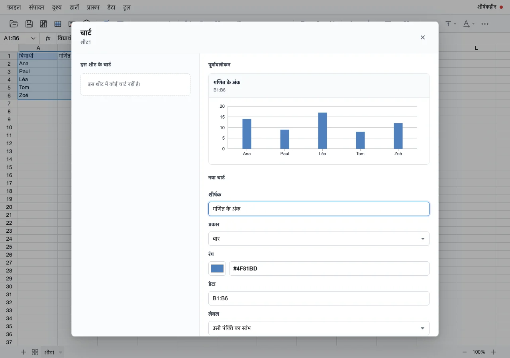
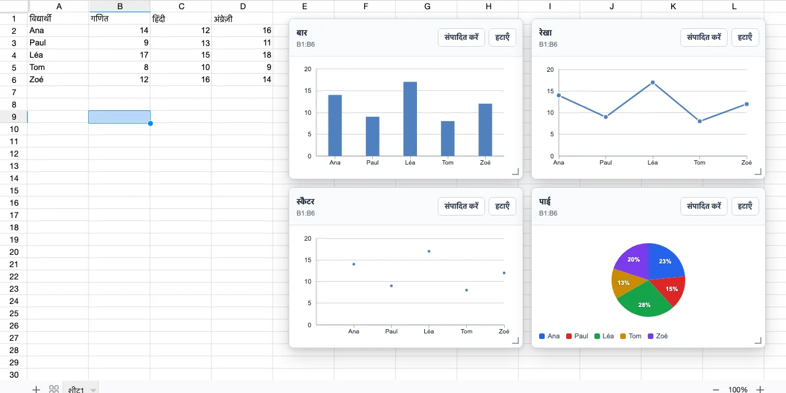
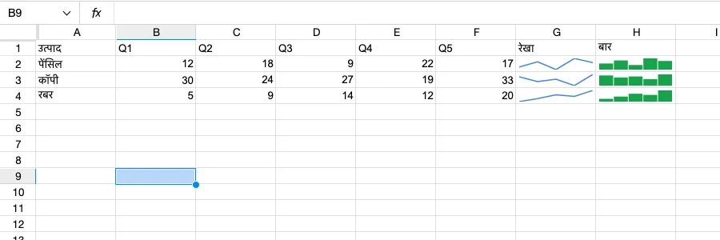

चार्ट और स्पार्कलाइन
चार्ट बनाना
- डेटा चुनें।
- या डालें › चार्ट डालें।
- प्रकार और विकल्प चुनें; पूर्वावलोकन साथ चलता है।
- जोड़ें, फिर बंद करें।

| चयन | अर्थ |
|---|---|
| संख्याओं का कॉलम या पंक्ति | डेटा |
| दो कॉलम | पहले में लेबल, दूसरे में डेटा |
| दो पंक्तियाँ | पहली में लेबल, दूसरी में डेटा |
| Ctrl से चुने दो अलग कॉलम | वही |
चार्ट एक श्रृंखला दिखाता है: डेटा की एक पंक्ति या कॉलम। बिना संख्या के सेल, जैसे शीर्षक, छोड़ दिए जाते हैं।
प्रकार
| प्रकार | किसके लिए | लेबल |
|---|---|---|
| बार | तुलना | स्तंभों के नीचे |
| रेखा | बदलाव | क्षैतिज अक्ष पर |
| स्कैटर | दो राशियों का संबंध | संख्याएँ हों तो वे भुज हैं; नहीं तो 1, 2, 3… |
| पाई | हिस्से; धनात्मक मान | लेजेंड में या खंडों पर |
120 मान तक, पाई में 24।

विकल्प
| फ़ील्ड | सामग्री |
|---|---|
| शीर्षक | आवश्यक; चार्ट के ऊपर दिखता है |
| रंग | चयनक या कोड #4F81BD; खंडों के अपने रंग हैं |
| डेटा | रेंज: B2:B6 |
| लेबल | नहीं; उसी पंक्ति का स्तंभ (A); उन्हीं स्तंभों की पंक्ति (1); कस्टम रेंज, डेटा के समान आकार की |
| दिखावट | मान, लेजेंड, क्षैतिज अक्ष, लंबवत अक्ष, ग्रिड |
हटाना, बदलना
- शीर्षक पट्टी खींचने से चार्ट हटता है; निचला दायाँ कोना खींचने से आकार बदलता है।
- संपादित करें विंडो फिर खोलता है, हटाएँ चार्ट हटाता है। विंडो शीट के सभी चार्ट भी दिखाती है।
- चार्ट अपने सेलों के डेटा के साथ चलता है।
चार्ट Excel फ़ाइल में वास्तविक चार्ट के रूप में सहेजे जाते हैं और DocCells उन्हें फिर पढ़ता है। वे शीट के साथ प्रिंट नहीं होते।
स्पार्कलाइन
SPARKLINE फ़ंक्शन सेल में छोटा चार्ट बनाता है।
=SPARKLINE(B2:F2)
=SPARKLINE(B2:F2, {"charttype"\"column"})
=SPARKLINE(B2:F2, {"charttype"\"line", "color"\"#dc2626", "linewidth"\2})
=SPARKLINE(B2:F2, {"charttype"\"bar", "max"\100})
विकल्प धनु कोष्ठकों में लिखे जाते हैं: नाम, बैकस्लैश, मान; दो विकल्पों के बीच अल्पविराम।
charttype | चित्र | अपने विकल्प |
|---|---|---|
"line" (डिफ़ॉल्ट) | रेखा | color, linewidth, xmin, xmax, ymin, ymax |
"bar" | जुड़ी पट्टियाँ | max, color1, color2 |
"column" | स्तंभ | color, negcolor, lowcolor, highcolor, firstcolor, lastcolor, axis, axiscolor, ymin, ymax |
"winloss" | जीत और हार | वही, ymin और ymax के बिना |
साझा विकल्प: empty ("zero" या "ignore"), nan ("convert" या "ignore"), rtl (दाएँ से बाएँ)। SPARKLINE का दस्तावेज़ सभी मान उदाहरणों सहित देता है।
बड़े चित्र के लिए पंक्ति और कॉलम बड़े करें, या सेल मिलाएँ।